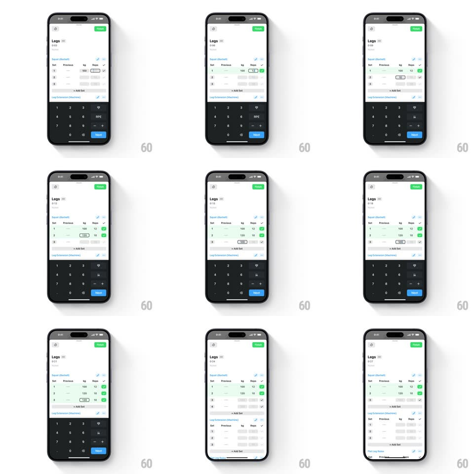

Media
Frame-by-frame

Rebuild this interaction 1:1: Strong's set logging - tapping kg and reps fields enters values through the numeric keypad, completing a set flashes the row green with a check, "+ Add Set" inserts a new row, and swiping a row left reveals a red delete that collapses it.

Rebuild this interaction 1:1: Strong's set logging - tapping kg and reps fields enters values through the numeric keypad, completing a set flashes the row green with a check, "+ Add Set" inserts a new row, and swiping a row left reveals a red delete that collapses it. ## Integration Integration: stack-agnostic spec - springs given as stiffness/damping, timed motions as duration + curve; map every value to your framework and animation library of choice. ## Scene Light workout screen: "Legs" header with timer and green FINISH button, per-exercise tables (Set / Previous / kg / Reps) with numbered rows, "+ Add Set" link, and a dark numeric keypad docked at the bottom (digits, RPE, Next button) when a field is focused. ## Motion spec Pattern: inline row state changes, ~250ms each. - Focus: tapping a field highlights the cell (150ms) and raises the keypad (250ms, ease-out). - Complete: tapping the row's check flashes the row green (background 0 -> tint, 150ms, hold 300ms) and fills its check solid; the timer keeps running. - Add: "+ Add Set" inserts a row below with a height-grow + fade (250ms, ease-out), copying the previous row's values as placeholders. - Delete: swiping a row left exposes the red delete strip (tracks finger 1:1); past 40% it commits - the row collapses to zero height (250ms, ease-in) and remaining rows renumber instantly. ## Calibration - The green flash is transient; the persistent state is the filled check, not a green row. - Keypad Next advances focus to the next field (kg -> Reps -> next row). ## Reduced motion Row states change without flash or collapse animation (instant). ## Don't miss - Previous values show as gray placeholders in kg/Reps cells from the start. - The delete strip appears only under the swiped row - no global edit mode.